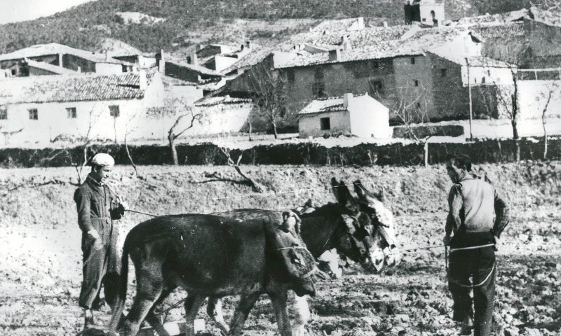

Historia:
Siles formaba parte del distrito de Saqura (Segura), perteneciente a la Cora de Yayyan (Jaén). Según refieren las crónicas, en época isl´mica la Sierra de Segura estaba poblada por numerosas aldeas, lugares de refugio y castillos fortalezas.
A finales del siglo XII, con la formación de los distintos reinos de Taifas, esta plaza fue disputada por los ziries de Granada y el rey de Almería Ibn Sumadih que se apoderó de Silis en 1076-77, pero poco después pasó mediante acuerdo a los ziries.
Siles fue conquistado en torno a 1230 por los caballeros de la Orden de Santiago al mando del maestre Pelay Pérez Correa y pasó a engrosar el extenso señorío de la Orden con sede en Segura de la Sierra.
Después de la conquista, Siles mantuvo su importancia estratégica, de lo que da cumplida cuenta el episodio el cerco de Yusuf I de Granada en 1339 o 1333, con 1.500 caballeros y 6.000 infantes moros. El ejercito cristiano al mando del maestre santiaguista Santiago Alonso Meléndez de Guzm´n, consiguió que los atacantes levantaran el cerco, que de haber tenido éxito habrían puesto en peligro no solo la marca santiaguista sino también al Adelantamiento de Cazorla.
Perteneció al Reino de Murcia y partido de Segura, Orden de Santiago y dependía de la Chancillería de Granada y al Obispado de Cartagena.
En 1397 Felipe II le concedió el privilegio de Villa. Este título de Villa se le otorgó por que ella sola y a sus expensas se cercó de murallas y construyó tres torreones.
La cerca tenía un trazado rectangular y era de argamasa, de dos varas de ancho y 10 varas de alto y de contorno 614 varas. Tenía tres torres, además de una fortaleza principal, que a su vez contaba con otras dos grandes torres. Entre ambas torres se encontraba la casa de aposentamiento, donde los santiaguistas recogían las rentas de los diezmos del pan, y junto a la casa se levantó la iglesia.
En esta casa de aposentamiento vivió don Rodrigo Manrique, padre de Jorge Manrique, durante mucho tiempo, y fue aquí donde murió. Amor patrio, ya que se sabe que murió en Ocaña La presencia de don Rodrigo en Siles motivo el que su fortaleza y población se vieran involucrados en las luchas nobiliarias del siglo XV.
A mediados del siglo XIX aún seguía en pie la fortaleza: el casco urbano de Siles estaba dividido en dos, la parte más antigua llamada Villa estaba circundada por las murallas, que conservaban hasta sus almenas y tres puertas; al resto del casco urbano que estaba fuera del recinto se denominaba Nueva Población.
Miércoles, 03 de Marzo de 2010 05:51